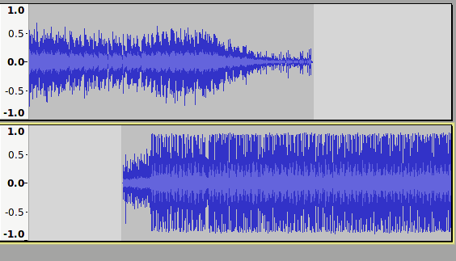
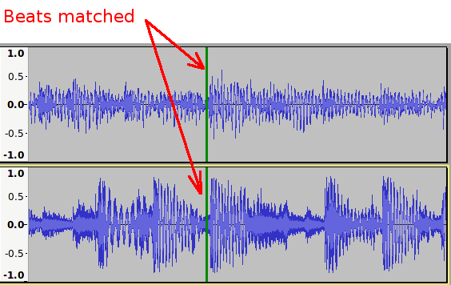
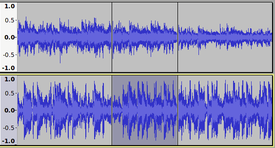
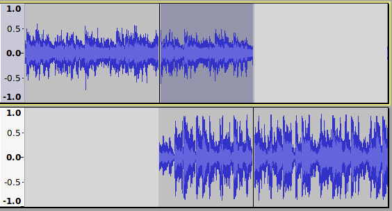
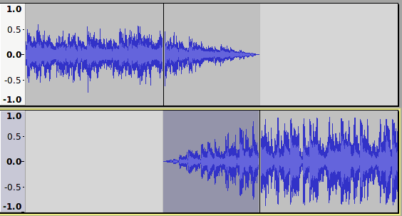

Creating a Crossfade
How to crossfade two tracks
First, the tracks should be imported or recorded. By default, importing two audio files will create two audio tracks one above the other. Similarly, recording a new track will by default create a new track below any other tracks in the project. This is the arrangement that we want as the starting point (for clarity the illustrations show mono tracks, but the procedure is exactly the same for stereo tracks).
Roughly position the tracks
Drag the second track to roughly the right place using the Time Shift tool  . Don't worry about getting the position too precise at this stage as we will adjust the position later. For crossfading two music tracks, an overlap of around 5 seconds is usually suitable, though sometimes a much shorter, or longer crossfade may sound better. How long the crossfade transition lasts is largely a matter of personal taste.
. Don't worry about getting the position too precise at this stage as we will adjust the position later. For crossfading two music tracks, an overlap of around 5 seconds is usually suitable, though sometimes a much shorter, or longer crossfade may sound better. How long the crossfade transition lasts is largely a matter of personal taste.
- 
Align tracks more precisely
Tracks will often begin and end with a short period of silence. Leading/trailing silence may be removed by selecting and deleting. Audacity's Cut Preview can be useful to check that the selection to be deleted is correct.
The end of the first track will be the point at which the first track finally stops (has faded to silence). The start of the second track will be the point at which the second track starts to fade in.
| For rhythmic music it will often sound best if the second track is carefully positioned so that the beats in the second track line up with the beats in the first track. If the tempi of the tracks are different it will not be possible to make all of the beats line up. In this case, try to make the beats align at a point just to left of halfway through the overlap. Zoom in/out as necessary to see an appropriate level of detail. |
- 
After selecting the region to be crossfaded, create a split at both ends of the selection using Ctrl + I. The split marks will greatly facilitate selecting the appropriate areas in each track.
- 
Trim the tracks
If, as in the images above, it is necessary to trim the tracks further, select the unwanted region after the fade out (in the upper track in this case) by double-clicking in it, then delete it.
- 
Apply fades
The quickest way to apply the fades is with the Crossfade Tracks effect. This effect applies a fade-out to the upper selected track, and a fade-in to the lower of the two tracks. For more complex fading, the Adjustable Fade effect may be applied to each of the tracks in turn, applying a fade-out to the overlapping section in the first track, and a fade-in to the overlapping section of the second track.
- 
Using linear fades can cause the volume level to drop midway through the fade.
|